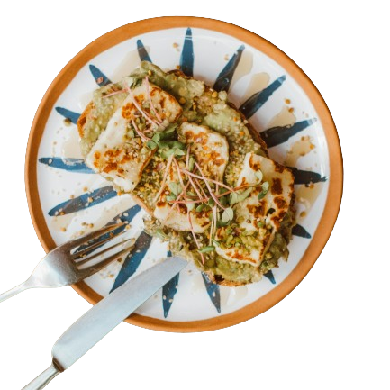

Bienvenue
Halloumi : Le fromage le plus célèbre de l'île, délicieux et polyvalent à la texture unique, se déguste à la fois froid et cuit (frit ou grillé). Le halloumi est principalement composé de lait de chèvre ou de brebis, bien que du lait de vache puisse également être utilisé. Il contient également du sel et parfois un peu de menthe. Ce qui distingue le halloumi des autres fromages, c'est sa texture. Il a une texture ferme et élastique lorsqu'il est cru, mais il devient incroyablement croustillant à l'extérieur et fondant à l'intérieur lorsqu'il est grillé ou frit. C'est pourquoi il est souvent utilisé dans des plats grillés ou sautés. Le halloumi a un goût salé et légèrement salé, avec une touche de saveur de lait. Sa saveur douce le rend adaptable à de nombreuses préparations culinaires. Le halloumi est généralement vendu dans de l'eau salée pour le conserver. Il doit être conservé au réfrigérateur et consommé dans un délai raisonnable pour maintenir sa fraîcheur. Le halloumi est devenu de plus en plus populaire en dehors de Chypre et est désormais apprécié dans de nombreuses cuisines internationales. Il est couramment utilisé dans les régimes végétariens et peut servir de substitut à la viande dans de nombreuses recettes.